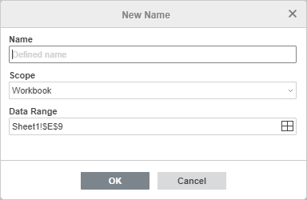
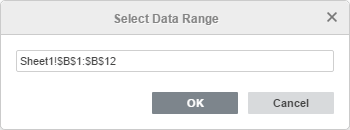
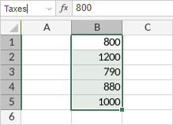
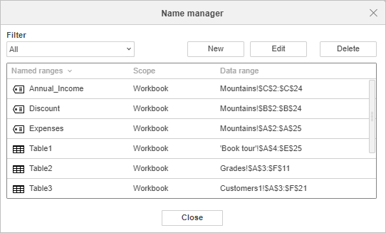
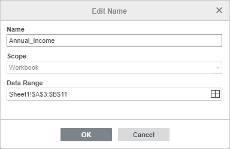
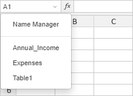
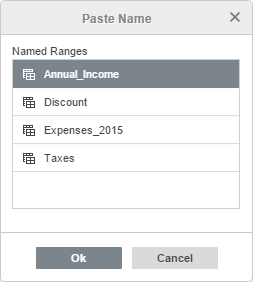
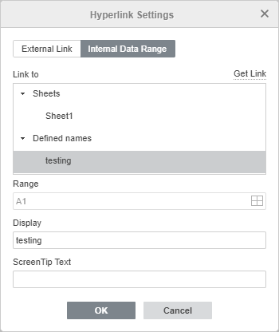

Koristite imenovane opsege
Nazivi su smislene oznake koje se mogu dodeliti ćeliji ili opsegu ćelija i koristiti za pojednostavljivanje rada sa formulama u Spreadsheet Editor-u. Prilikom kreiranja formule možete ubaciti naziv kao njen argument umesto korišćenja reference na opseg ćelija. Na primer, ako dodelite naziv Annual_Income opsegu ćelija, biće moguće uneti =SUM(Annual_Income) umesto =SUM(B1:B12). Na taj način formule postaju preglednije. Ova funkcija je takođe korisna ako se veliki broj formula odnosi na isti opseg ćelija. Ako se adresa opsega promeni, možete izvršiti ispravku jednom koristeći Menadžer naziva umesto da uređujete sve formule pojedinačno.
Postoje dve vrste naziva koje se mogu koristiti:
- Definisani naziv – proizvoljan naziv koji možete navesti za određeni opseg ćelija. Definisani nazivi takođe uključuju nazive koji se automatski kreiraju prilikom podešavanja oblasti štampe.
- Naziv tabele – podrazumevani naziv koji se automatski dodeljuje novoj formatiranoj tabeli (Table1, Table2 itd.). Ovaj naziv možete kasnije izmeniti.
Ako ste kreirali sekač za formatiranu tabelu, automatski dodeljen naziv sekača takođe će biti prikazan u Menadžeru naziva (Slicer_Column1, Slicer_Column2 itd. Ovaj naziv se sastoji od dela Slicer_ i naziva polja koji odgovara zaglavlju kolone iz izvornog skupa podataka). Ovaj naziv možete kasnije izmeniti.
Nazivi se takođe klasifikuju prema Opsegu, odnosno lokaciji na kojoj je naziv prepoznat. Naziv može biti dodeljen celoj radnoj svesci (biće prepoznat na svim radnim listovima u toj svesci) ili pojedinačnom radnom listu (biće prepoznat samo na navedenom radnom listu). Svaki naziv mora biti jedinstven unutar jednog opsega, ali se isti nazivi mogu koristiti u različitim opsezima.
Kreiranje novih naziva
Da biste kreirali novi definisani naziv za izabrani opseg:
- Izaberite ćeliju ili opseg ćelija kojem želite da dodelite naziv.
- Otvorite prozor za novi naziv na jedan od sledećih načina:
- Kliknite desnim tasterom miša na izbor i izaberite opciju Definiši naziv iz kontekstnog menija,
- ili kliknite na ikonu Imenovani opsezi na kartici Home na gornjoj traci sa alatkama i izaberite opciju Definiši naziv iz menija.
- ili kliknite na dugme Imenovani opsezi na kartici Formula na gornjoj traci sa alatkama i izaberite opciju Menadžer naziva iz menija. U otvorenom prozoru izaberite opciju Novo.
Otvoriće se prozor Novi naziv:

- Unesite potreban Naziv u polje za unos teksta.
Napomena: naziv ne može početi brojem, sadržati razmake ili znakove interpunkcije. Donje crte (_) su dozvoljene. Velika i mala slova se ne razlikuju.
- Odredite Opseg naziva. Podrazumevano je izabran opseg Radna sveska, ali možete navesti i pojedinačni radni list izborom sa liste.
- Proverite izabranu adresu Opsega podataka. Po potrebi je možete promeniti. Kliknite na ikonu – otvoriće se prozor Izaberi opseg podataka.

Promenite vezu ka opsegu ćelija u polju za unos ili izaberite novi opseg na radnom listu pomoću miša i kliknite OK.
- Kliknite OK da biste sačuvali novi naziv.
Da biste brzo kreirali novi naziv za izabrani opseg ćelija, možete uneti željeni naziv u polje za naziv koje se nalazi levo od trake sa formulama i pritisnuti Enter. Na ovaj način kreirani naziv biće dodeljen opsegu Radna sveska.

Upravljanje nazivima
Svim postojećim nazivima možete pristupiti putem Menadžera naziva. Da biste ga otvorili:
- kliknite na ikonu Imenovani opsezi na kartici Home na gornjoj traci sa alatkama i izaberite opciju Menadžer naziva iz menija,
- ili kliknite na strelicu u polju za naziv i izaberite opciju Menadžer naziva.
Otvoriće se prozor Menadžer naziva:

Radi lakšeg korišćenja, možete filtrirati nazive izborom kategorije koju želite da prikažete: Svi, Definisani nazivi, Nazivi tabela, Nazivi sa opsegom radnog lista ili Nazivi sa opsegom radne sveske. Nazivi koji pripadaju izabranoj kategoriji biće prikazani, dok će ostali biti sakriveni.
Da biste promenili redosled sortiranja prikazane liste, možete kliknuti na naslove Imenovani opsezi ili Opseg u ovom prozoru.
Za izmenu naziva, izaberite ga sa liste i kliknite na dugme Izmeni. Otvoriće se prozor Izmeni naziv:

Kod definisanog naziva možete promeniti naziv i opseg podataka na koji se odnosi. Kod naziva tabele možete promeniti samo naziv. Kada izvršite sve potrebne izmene, kliknite OK da biste ih primenili. Da biste odbacili izmene, kliknite Otkaži. Ako se izmenjeni naziv koristi u formuli, formula će se automatski ažurirati.
Za brisanje naziva, izaberite ga sa liste i kliknite na dugme Obriši.
Napomena: ako obrišete naziv koji se koristi u formuli, formula više neće funkcionisati (vratiće grešku #NAME?).
Takođe možete kreirati novi naziv u prozoru Menadžer naziva klikom na dugme Novo.
Korišćenje naziva pri radu sa tabelom
Za brzo kretanje kroz opsege ćelija, možete kliknuti na strelicu u polju za naziv i izabrati željeni naziv sa liste – opseg podataka koji odgovara tom nazivu biće izabran na radnom listu.

Napomena: lista naziva prikazuje definisane nazive i nazive tabela dodeljene trenutnom radnom listu i celoj radnoj svesci.
Za dodavanje naziva kao argumenta formule:
- Postavite kursor na mesto gde želite da dodate naziv.
- Izvršite jedan od sledećih koraka:
- unesite naziv željenog imenovanog opsega ručno pomoću tastature. Kada unesete početna slova, prikazaće se lista Automatskog dovršavanja formula. Kako kucate, stavke (formule i nazivi) koje odgovaraju unetim karakterima biće prikazane. Možete izabrati željeni definisani naziv ili naziv tabele sa liste i ubaciti ga u formulu dvoklikom ili pritiskom na taster Tab.
-
ili kliknite na ikonu Imenovani opsezi na kartici Home na gornjoj traci sa alatkama, izaberite opciju Nalepi naziv iz menija, izaberite željeni naziv u prozoru Nalepi naziv i kliknite OK:

Napomena: prozor Nalepi naziv prikazuje definisane nazive i nazive tabela dodeljene trenutnom radnom listu i celoj radnoj svesci.
Za korišćenje naziva kao internog hiperveze:
- Postavite kursor na mesto gde želite da dodate hipervezu.
- Idite na karticu Insert i kliknite na dugme Hyperlink.
- U otvorenom prozoru Podešavanja hiperveze izaberite karticu Interni opseg podataka i izaberite imenovani opseg.

- Kliknite OK.